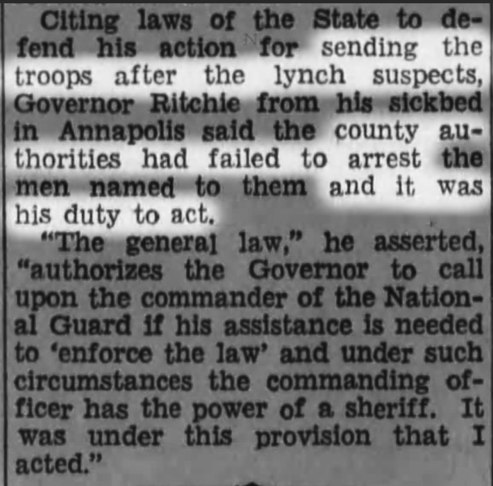
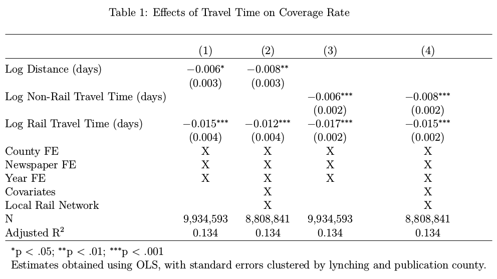
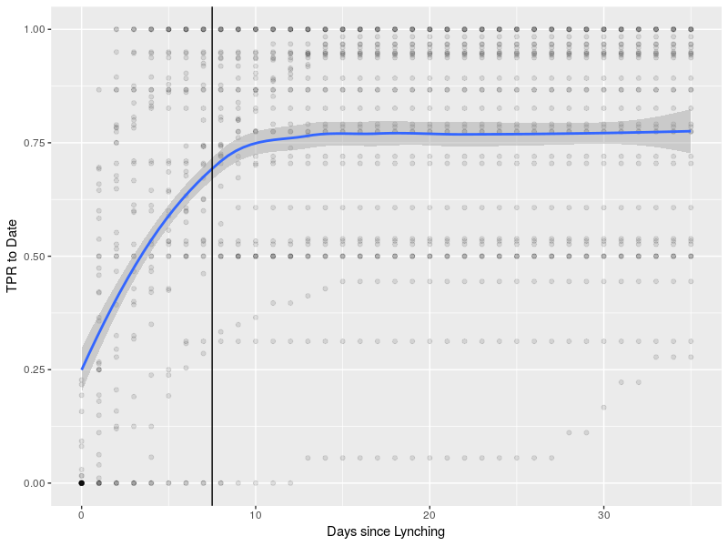

name: inverse layout: true class: center, middle, inverse --- #Publicity and the Delegitimation of Lynching Michael Weaver The University of British Columbia June 21, 2018 --- ##How does violence become publicly unacceptable? --- ##Lynching in the United States --- template:inverse ###Rebecca Felton, suffragette: <img src="./clippings/felton.png" width="90%" </img> --- layout:false class: left, middle > "**I led the mob** which lynched Nelse Patton and **I'm proud of it**. ... I directed every movement of the mob. **I wanted him lynched**. I saw his body dangling from a tree this morning, and I am glad of it. **I aroused the mob and directed them to storm the jail**. I had my revolver but did not use it. I gave it to a deputy sheriff and **told him to shoot** Patton and shoot to kill." >> William V. Sullivan, former United States Senator, Mississippi --- template:inverse <img src="./clippings/lynching-headline.png" width="90%" </img> --- template:inverse <img src="./clippings/lynching_innocent.png" width="90%" </img> --- template:inverse <img src="./clippings/house_condemns_lynching.png" width="50%" </img> *The Chillicothe Constitution-Tribune* 1/15/1931 --- template:inverse ##How did this transformation take place? -- ##How does violence move from acceptable to unacceptable? --- .left-column[ ##Outline ] .right-column[ ### Publicity ### Lynching ### Evidence (so far) ### New Extensions ] --- template:inverse ##The argument --- template:inverse ## Which violence is "legitimated" (locally)? --- .left-column[ ##Argument ### Violence ] .right-column[ ### When powerful actors are perpetrators: 1. Motive and means to justify violence 2. Difficult to challenge: reputational costs, coercion 3. May be self-reinforcing dynamic ### How can this dynamic be challenged? ] --- template:inverse ##Publicity --- .left-column[ ##Argument ### Violence ### Publicity ] .right-column[ ### Reach * Geographic scope of audience * May not share local norms on violence * Critics not silenced ### Inclusivity * Inclusion of different voices in public debate * Victims and allies no longer silent * 'Facts' and justifications around violence contested ] --- template:inverse ##Lynching and Publicity -- ### Local critics silenced, but... --- .left-column[ ##Argument ###Definitions ###Publicity ###Lynching] .right-column[ ###1. Increase in publicity * Technology + Economic/Political Integration `\(\rightarrow\)` greater reach * Reach + activists `\(\rightarrow\)` inclusion of black voices ] --- template:inverse <img src="./clippings/ida_wells_speech_2.png" width="60%" </img> "The negroes must have detectives who can go and find out the facts about each lynching and publish them side by side with the versions printed in the Southern newspapers" --- .left-column[##Argument ###Definitions ###Publicity ###Lynching] .right-column[ ###1. Increase in publicity * Technology + Economic/Political Integration `\(\rightarrow\)` greater reach * Reach + activists `\(\rightarrow\)` inclusion of black voices ###2. Publicity breeds criticism and scandal ] --- class: left, middle > "The Chattanooga News does not lift its voice in behalf of Sheriff Shipp, his deputies or any member of the mob that lynched Johnson. Its voice is merely raised in behalf of this community. It submits that even so high and mighty a person as the Attorney General of the United States has **not just cause to hold this community up in contempt of the world** and in effect **publish it abroad as lawless** and firmly set against the enforcement of law." >> "An Official in Contempt of Chattanooga," *The Chattanooga News* --- .left-column[##Argument ###Definitions ###Publicity ###Lynching] .right-column[ ###1. Increase in publicity * Technology + Economic/Political Integration `\(\rightarrow\)` greater reach * Reach + activists `\(\rightarrow\)` inclusion of black voices ###2. Publicity breeds criticism and scandal ###3. Bad publicity turns Southern elites against lynching ] --- template:inverse <img src="./clippings/lynching_bad_reputation.png" width="50%" </img> "our lynching reputation ... is holding the state back in its development." --- .left-column[##Argument ###Definitions ###Publicity ###Lynching] .right-column[ ###1. Increase in publicity * Technology + Economic/Political Integration `\(\rightarrow\)` greater reach * Reach + activists `\(\rightarrow\)` inclusion of black voices ###2. Publicity breeds criticism and scandal ###3. Bad publicity turns Southern elites against lynching ###4. With opposition of local elites, lynching declines ] --- template:inverse  Maryland Governor uses National Guard to hunt down the lynch mob --- template:inverse ## Evidence --- .left-column[ ## Tests ### Reach ] .right-column[ ### With existing data, can test four implications of the argument Access to communication technology determines publicity. **The probability that a lynching is reported:** (1) **increases** as travel times **decrease** between the lynching and the paper. (2) **increases** when the lynching occurred in an area more **central in communication and transportation networks**. ] --- .left-column[ ## Tests ### Reach ] .right-column[ ### With existing data, can test four implications of the argument Exposure to publicity yields criticism, fewer lynchings. **Coverage** of lynching is **more critical**: (3) as the **distance** from the lynching to the newspaper **increases**. Lynching **declines faster**: (4) in places with **more exposure** to national public sphere ] --- .left-column[ ## Tests ### Reach ### Data ] .right-column[ ###Railroad Networks * Yearly from 1880 to 1900: centrality and travel time ###Lynchings * National database on lynchings from numerous sources ###Press Coverage * Digitized Newspaper Archives (keywords) ] --- template:inverse # What can I show? --- .left-column[ ## Analysis ### Design ] .right-column[ ### Observations * Issues appearing within a week of a lynching * **Issue - lynching pairs** ### Design * **Panel analysis**, multi-way clustering * Year, publication, lynching county fixed effects * Publication-county, lynching-county covariates (population, agricultural and industrial output, local railroad network) ] --- .left-column[ ## Analysis ### Design ### Results ] .right-column[ ### Four implications of the argument Access to communication technology determines publicity. **The probability that a lynching is reported:** ![check][] (1) **increases** as travel times **decrease** between the lynching and the paper. (Closeness increases) (2) **increases** when the lynching occurred in an area more **central in communication and transportation networks**. ] [check]:./check-mark-3-24.png --- class: center, middle Probability of lynching mention by travel times  --- ###Halving rail travel time increases coverage by 1 ppt (vs. 0.4 ppt when halving distance) --- .left-column[ ## Analysis ### Design ### Results ] .right-column[ ### Four implications of the argument Access to communication technology determines publicity. **The probability that a lynching is reported:** ![check][] (1) **increases** as travel times **decrease** between the lynching and the paper. (Closesness increases) ![check][] (2) **increases** when the lynching occurred in an area more **central in communication and transportation networks**. ] [check]:./check-mark-3-24.png --- class: center, middle Probability of lynching mention betweenness centrality: Dyads <img src="./figures/betweenness_dyads.png" width="100%" height="75%"</img> --- ###Moving into top deciles of betweenness centrality increases coverage same amount as being 2400 miles closer --- .left-column[ ## Analysis ### Design ### Results ] .right-column[ ### Four implications of the argument Exposure to publicity yields criticism, fewer lynchings. **Coverage** of lynching is **more critical**: ![check][] (3) as the **distance** from the lynching to the newspaper **increases**. Lynching **declines faster**: (4) in places with **more exposure** to national public sphere ] [check]:./check-mark-3-24.png --- class: center, middle Anti-Lynching - Pro-Lynching Discourse --- ###Compared to local papers, discourse of lynching by white newspapers 1000 miles away was between a third and a half-way to the level of criticism in African American newspapers. --- .left-column[ ## Analysis ### Design ### Results ] .right-column[ ### Four implications of the argument Exposure to publicity yields criticism, fewer lynchings. **Coverage** of lynching is **more critical**: ![check][] (3) as the **distance** from the lynching to the newspaper **increases**. Lynching **declines faster**: ![check][] (4) in places with **more exposure** to national public sphere ] [check]:./check-mark-3-24.png --- class: center, middle [Access](#access) to higher circulation daily papers inhibits lynching --- ###Median increase (~ twofold) in access to circulation yields between 1.8 and 5.1 ppt reduction in probability of lynching --- template:inverse ##What's next? --- .left-column[ ##Next steps ###Reputational Costs ] .right-column[ ###Does **criticism** stop lynching? After lynchings with major public backlash/anti-lynching campaigns: * Lynchings foiled * Local elites argue against lynching (newspapers) * Proposed anti-lynching legislation ] --- .left-column[ ##Next steps ###Reputational Costs ] .right-column[ ###Does **criticism** stop lynching? Level of criticism of lynching events is not random, how can we compare? ] --- .left-column[ ##Next steps ###Reputational Costs ] .right-column[ ###Does **criticism** stop lynching? With current data, can not show: - change in information flows - results in change in behavior ### How to isolate effect of information? ] --- .left-column[ ##Next steps ###Reputational Costs ] .right-column[ ### Need for exogenous change in media exposure - Following Garcia-Jimeno, Iglesias, and Yildirim - Disruptions in telegraph and rail connections reduce coverage (and criticism) - Need: - location of telegraph, railroad network at time of lynching - dates/locations of railroad/telegraph disruptions ] --- .left-column[ ##Next steps ###Reputational Costs ] .right-column[ ### Need for exogenous change in media exposure - Zooniverse project captures telegraph/rail locations ] --- .left-column[ ##Next steps ###Reputational Costs ] .right-column[ ### With... - New rail/telegraph data - Measures of service disruptions - Attempted/completed lynchings - Local press discussion of lynching ### Can find causal effect of "bad press" ] --- template:inverse #Thank you --- --- template:inverse ##The data --- .left-column[ ##Data ###Newspapers ] .right-column[ ###"Big data" meets history Cornerstone of the project * Digitized historical newspapers * More than 3,000 different papers * Nation-wide coverage * Big-city dailies, small town weeklies * 9 million+ unique issues between 1880 and 1940 * Searchable content * 1.2 million articles mention "lynching" * Words/phrases for lynching discourse ] --- Digitized Newspaper Issues by State <img src="./figures/digitized_issues_by_state.png" width="100%" height="75%"</img> --- <img src="./figures/digitized_by_year.png" width="100%" height="75%"</img> --- template:inverse <iframe width='100%' height='100%' frameborder='0' src='https://yale.cartodb.com/u/mdweaver/viz/ffd06ece-8545-11e4-a898-0e018d66dc29/embed_map' allowfullscreen webkitallowfullscreen mozallowfullscreen oallowfullscreen msallowfullscreen></iframe> --- .left-column[ ##Data ###Newspapers ###Railroads ] .right-column[ ###Railroad networks Yearly data from 1880 and 1900 * Period of rapid growth (more than doubles) * 3109 counties in continental US * Network centrality of counties * Travel time between counties * Proxy for telegraph network ] --- class:center, middle <iframe width='100%' height='100%' frameborder='0' src='https://mdweaver.github.io/times_year' allowfullscreen webkitallowfullscreen mozallowfullscreen oallowfullscreen msallowfullscreen></iframe> --- template:inverse #Extra slides --- title: extras #### Analysis - [model specification](#equations) - [coverage (not dyads)](#aggregate_result) - [effects over distance](#distance_result) - [limits](#limits) - [access](#access) #### Data - [railroad extensions](#railroad_extension) - [coverage validation (window)](#coverage_window) - [coverage validation (accuracy)](#coverage_accuracy) - [discourse measures](#keywords) - [discourse extensions](#text_extension) #### Background - [lynching discourses](#lynching_discourse) - [newspaper partisanship](#partisanship) --- name:limits .left-column[ ## Analysis ### Limits [extras](#extras) ] .right-column[ ###Railroads Endogenous? * but network attributes not locally determined * conditioned on local railroad construction ###Alternative interpretations * Importance, not information * Condition on population, economic output * Access to circulation, not to population * Reduced or hidden lynchings? * "Supply" or "demand"? ###Text * Broad but limited depth * Keywords are drastic simplification * Validation: manual coding, full text ] --- name:equations ##Equations ### Coverage Model `$$\begin{equation}\label{eq:coverage_dyads} \begin{split} Y_{ijt} =& \alpha_{year} + \alpha_{county-i} + \alpha_{j} + \boldsymbol{\delta}\mathbf{Centrality_{it}} + \\ &\boldsymbol{\beta}\mathbf{Distance_{ijt}} + \boldsymbol{\gamma}\mathbf{X_{it}} + \boldsymbol{\lambda}\mathbf{W_{jt}} + \\ &\varepsilon_{county_i} + \varepsilon_{county_j} \end{split} \end{equation}$$` ### Lynching model `$$\begin{equation}\label{eq:lynching} \begin{split} Lynchings_{it} = \alpha_i + \alpha_t + \beta_1 Access_{it} + \mathbf{X_{it}\beta} + \varepsilon_{county_i} \end{split} \end{equation}$$` [extras](#extras) --- name:access ### Media Access `$$MediaAccess_i = \sum\limits_{i \neq j}^{j} Circulation_j * \tau_{ij}^{-1}$$` [extras](#extras) [return](#75) --- name: aggregate_result Centrality Results (aggregated to the event, fraction of papers) [extras](#extras) --- name: distance_result <img src="./figures/effects_across_distance.png" width="100%" height="75%"</img> [extras](#extras) --- name: partisanship Fraction of daily Republican papers Republican by region [extras](#extras) --- Fraction of all papers Republican (south) [extras](#extras) --- name:coverage_window Fraction of event-related articles from time of event [extras](#extras) --- name:coverage_accuracy TPR of article-event matching over time from event  [extras](#extras) --- PPV of article-event matching over time from event [extras](#extras) --- name:keywords [extras](#extras) --- <img src="./figures/anti_lynching.png" width="100%" height="75%"</img> [extras](#extras) --- ### Discourse scaling `$$\begin{equation}\label{eq:discourse_scale} scaledDiscourse_j = \left( \frac{1}{n_d} \sum_{i=1}^{n_d} discourseWord_i \right) - \left( \frac{1}{n} \sum_{i=1}^{n} Word_i \right) \end{equation}$$` [extras](#extras) --- name:railroad_extension .left-column[ ##Data ###Railroads [extras](#extras) ] .right-column[ ###Railroad networks * Railroad stations for each year between 1880 and 1910 * Scanned station lists for each year * Digitizing text, geocoding * Proximity to rail stations * Telegraph offices * Scanned lists * Digitizing text, geocoding ] --- class: center, middle <img src="./figures/official_guide.png" height="60%" width = "60%" </img> [extras](#extras) --- template:inverse <iframe width='100%' height='95%' frameborder='0' src='https://mdweaver.github.io/station_map' allowfullscreen webkitallowfullscreen mozallowfullscreen oallowfullscreen msallowfullscreen></iframe> [extras](#extras) --- name:text_extension .left-column[ ##Data ###Newspapers [extras](#extras) ] .right-column[ ###Which argument against lynching were effective? - Messy full text from ~85 million pages of news - RAs classified discourses about ~2000 articles on lynching - Look for spread and use of anti-lynching discourses across time and space ] --- name:lynching_discourse .left-column[ ## Background ###Lynching discourse [extras](#extras) ] .right-column[ ###Arguments in favor * Inefficiency/corruption of justice system * Popular sovereignty * Law does not deter criminals * Threat of black criminality/sexuality * 'Natural' response to rape ] --- .left-column[ ## Background ###Lynching discourse [extras](#extras) ] .right-column[ ###Justificatory Narratives * Protagonists * Sober, rational, all/leading citizens of town * Passive voice: no individuals did the lynching * Lynching was natural/unavoidable response * Antagonists * Black men dehumanized: "savages", "brutes", "beasts" * Assumed to be guilty * By default shown as sexually aggressive, criminals * Lynched *because* guilty ] --- .left-column[ ## Background ###Lynching discourse ###Antilynching discourse [extras](#extras) ] .right-column[ ###Arguments Refuted pro-lynching claims * e.g. rape alleged in minority of cases * Lynching a threat to law and order * Lynching part of a system of racial violence * e.g. Du Bois: "The police is the mob. The courts are the lynchers." ###Narratives Black voices counter white narratives about lynching * NAACP investigations * Ida Wells publications * Scottsboro Trials ] ---